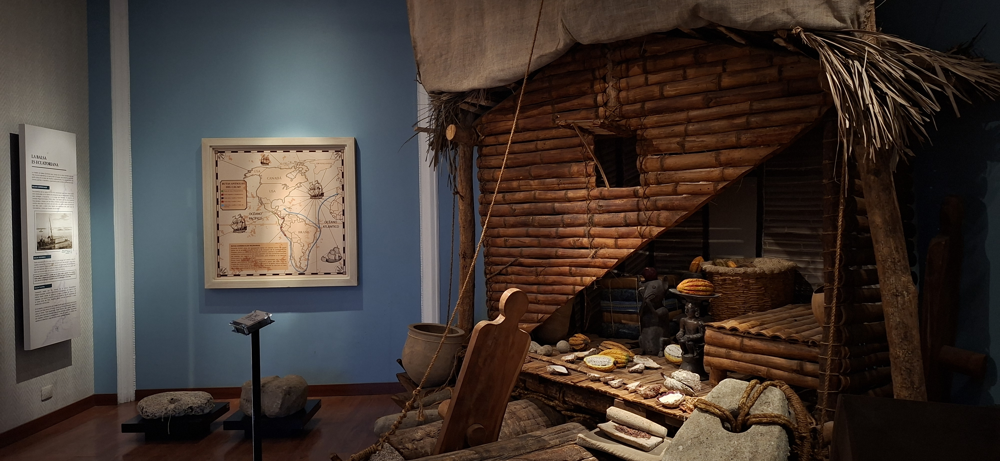

Cultura Mayo-Chinchipe
Evidencias arqueológicas revelan que en la alta Amazonía ecuatoriana se encuentran los vestigios más antiguos del mundo en el uso y domesticación del cacao, hace más de 5,300 años.
Origen y auge del cacao en el Ecuador
Bienvenidos al corazón de Guayaquil, en la histórica calle Panamá. El Museo Nacional del Cacao nace del sueño de rescatar la memoria viva de nuestra tierra. Este espacio surge para contar la fascinante travesía de «la pepa de oro», honrando el esfuerzo de las generaciones pasadas y devolviéndole a la ciudad un punto de encuentro donde el pasado, la cultura y las tradiciones vuelven a latir con fuerza.
Evidencias arqueológicas revelan que en la alta Amazonía ecuatoriana se encuentran los vestigios más antiguos del mundo en el uso y domesticación del cacao, hace más de 5,300 años.
Ecuador es cuna del exclusivo cacao Fino de Aroma, reconocido a nivel mundial por sus inconfundibles notas florales y de frutos secos que no se encuentran en ninguna otra región del planeta.
Nuestro territorio concentra la mayor diversidad genética de cacao del mundo, convirtiendo al país en el guardián histórico de este fruto ancestral.
Para las antiguas sociedades aborígenes de la costa y el oriente, el grano de cacao no solo era alimento sagrado y moneda de trueque, sino también un elemento ritual fundamental.
Destacadas entre nuestros visitantes

Un rincón que te hace sentir como si visitaras la casa de los abuelos. Entre la hamaca y los detalles de campo, te transporta de inmediato a esas historias y costumbres de antes

Descubre los orígenes del comercio marítimo prehispánico. Este espacio recrea las valientes travesías de los mercaderes locales, quienes dominaron las corrientes del mar y conectaron civilizaciones enteras a través del trueque de productos emblemáticos de nuestra tierra.

Un salón elegante que te lleva directo a la época dorada de las haciendas. Entre el piano y los retratos antiguos, sientes que estás pisando la sala de una familia de antaño

Aenean ornare velit lacus, ac varius enim lorem ullamcorper dolore aliquam.

Aenean ornare velit lacus, ac varius enim lorem ullamcorper dolore aliquam.

Aenean ornare velit lacus, ac varius enim lorem ullamcorper dolore aliquam.
Planifica tu visita y vive la experiencia de la historia del cacao en el corazón del centro histórico de Guayaquil.